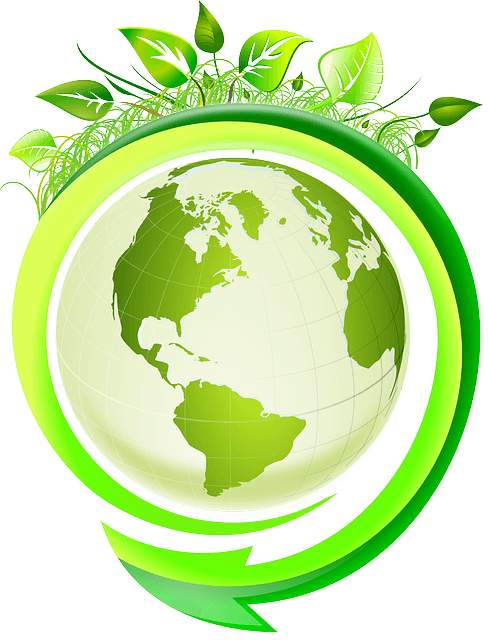
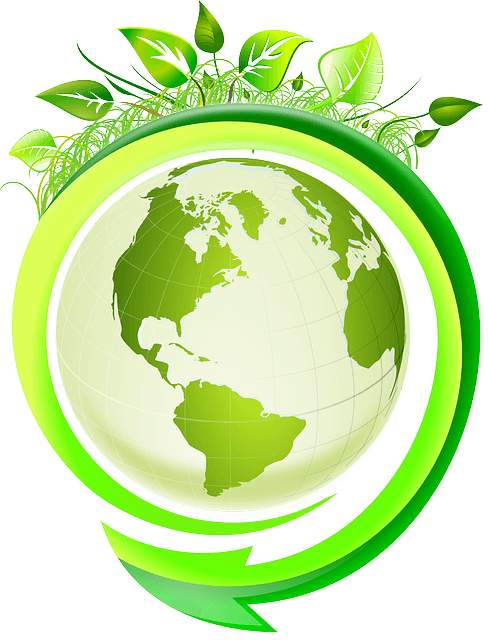

Et toi, tu veux quel futur ?

Et toi, tu veux quel futur ?
Mission
Open Cylife est un collectif dont l’objet est de consacrer la puissance des technologies innovantes à
l'émergence d’une société plus équitable et responsable.

Nos principes
Nous évaluons pour chacune de nos action, d’une part son cycle de vie complet ( conception, fabrication,
utilisation, transformation) et d’autre part son impact sur l’écosystème concerné.
Nous privilégions le temps long : Concertation large, formulation précise de la problématique et application
d’une solution par itération ( Boucle experimentation-rectification).
Nous valorisons chaque ressource : Limiter la production en réadaptant l’existant, traiter les “déchets”
comme du potentiel et générer de multiples bénéfices à partir d’un seul processus.
Nous nous connectons aux “périphéries" et contextes à risque, puisqu’ils sont source d’innovation.
Nous défendons la diversité et la modularité des réponses apportées

Nos actions

Connecter
...les communautés technologiques et celles oeuvrant à la transition sociétale
Mettre
... à disposition des ressources matérielles, intellectuelles et financières pour accompagner
les projets communs naissants.
Diffuser
...sur les territoires les solutions issues des projets, s’assurer de leur efficacité et ainsi
participer concrètement à la transition sociétale et à la résolution de problématiques globales.

Notre écosystème
Nous évaluons pour chacune de nos actions, d'une part son cycle de vie complète (conception, fabrication,
utilisation, transformation) et d'autre part son impact sur l'écosystème concerné.
Nous privilégions le temps long: Concertation large, formulation précise de la problématique et application
d'une solution par itération (Boucle expérimentation-rectification).
Nous valorisons chaque ressource : Limiter la production en réadaptant l'éxistant, traiter les "déchets"
comme du potentiel et générer de multiples bénéfices à partir d'un seul processus.
Nous nous connectons aux "périphériques" et contextes à rique, puisqu'ils sont source d'innovation.
Nous défendons la diversité et la modularité des réponses apportées

Nos pôles
Les problématiques sur lesquelles nous travaillons sont à la fois systémiques et urgentes.
Les solutions doivent donc impliquer dès leur conception toutes les parties prenantes:
Ecoles, entreprises, associations, individus, pouvoirs publics...

Rejoignez-nous